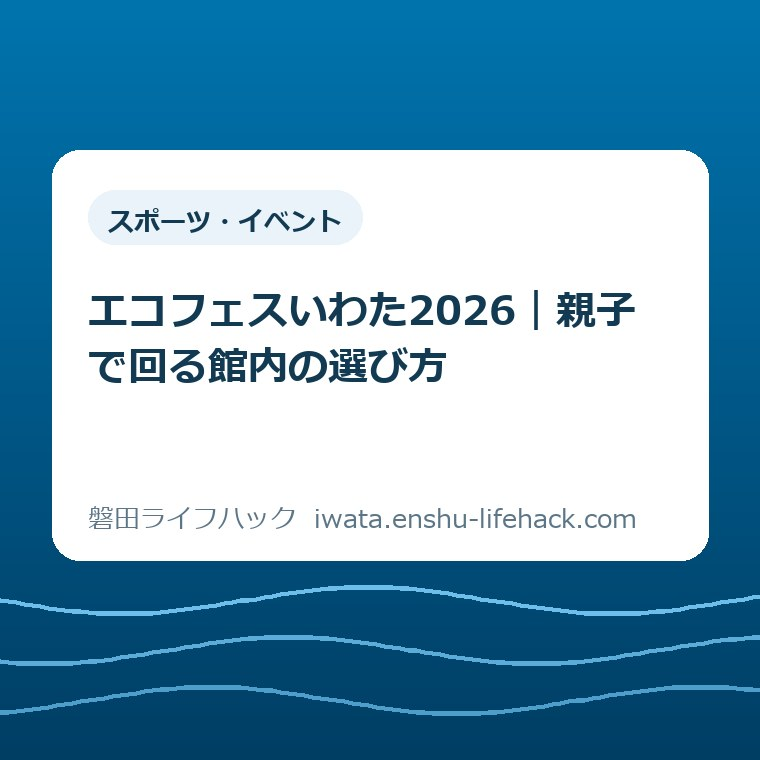
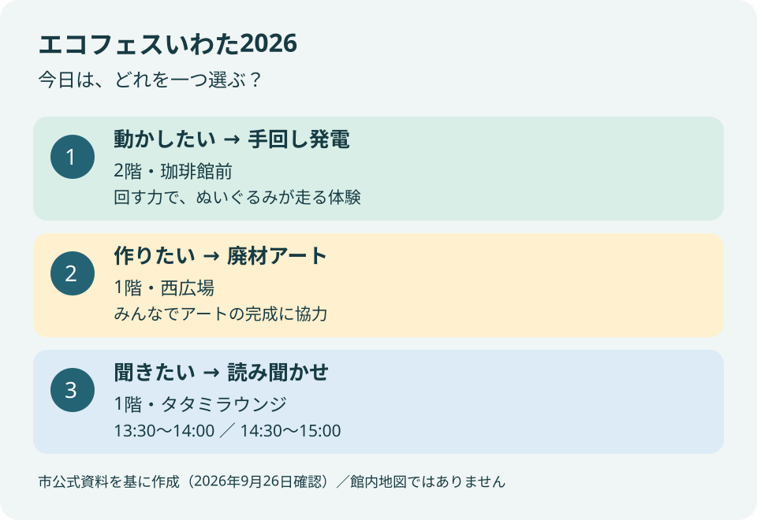
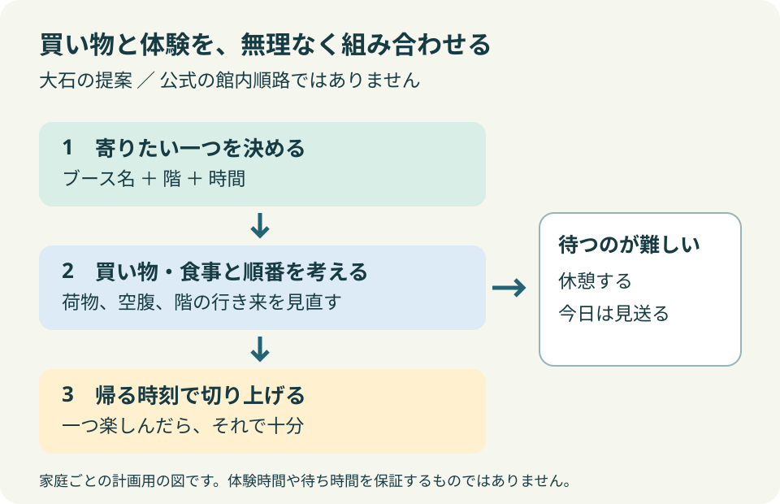

スポーツ・イベント
エコフェスいわた2026｜親子で回る館内の選び方

この記事の要点
Q. 買い物のついでに子どもと寄るなら、どこから回ればいい？
A. 2026年10月4日（日）11〜16時、ららぽーと磐田で開催。申込不要です。親子で立ち寄るなら、手回し発電・廃材アート・読み聞かせから、子どもが気になる一つを選ぶのが私の提案です。缶バッジ作りは材料費が必要。出展変更もあるため、出発前に市公式の位置図と最新案内を確認してください。
買い物のついでにも、親には段取りがある
子どもと週末の買い物に出るだけで、保護者はすでに仕事をしています。持ち物を用意し、食事や昼寝の時間を考え、買った荷物を持って帰る。そこへ催しを一つ足すなら、楽しさだけでなく、館内を歩く距離や待つ時間も予定に入ってきます。
イベントの参加条件や費用は、体験ごとに異なります。市の制度や施設の利用条件も、家庭の個別条件によって変わります。「申込不要」という言葉だけで、すべて無料、いつでもすぐ体験できる、と受け取らないところから始めたいと思います。
大石浩之（磐田市／不動産業）です。私は、今回のエコフェスいわた2026を、全部のブースを回る予定にはしないほうがよいと考えます。子どもが気になる一つを先に決め、買い物に無理なく重ねる。それなら、保護者の用事と子どもの楽しみを同じ日に置きやすくなります。
この記事は参加した日の体験記ではありません。2026年9月26日に確認した磐田市の公表資料を基に、出かける前の選び方を考えた記事です。会場で何分待つか、子どもが何を喜ぶかまでは、私にもわかりません。わからない部分を予定で埋めすぎないことも、段取りの一つです。
エコフェスいわた2026の開催概要
磐田市公式「エコフェスいわた2026」は、2026年10月4日（日曜）午前11時から午後4時まで、ららぽーと磐田で開催すると案内しています。会場の住所は磐田市高見丘1200。対象はどなたでも、申込みは不要です。公式ページの更新日は2026年9月18日です。
| 項目 | 公式案内で確認できた内容 |
|---|---|
| 開催日 | 2026年10月4日（日曜） |
| 開催時間 | 11時〜16時 |
| 会場 | ららぽーと磐田（磐田市高見丘1200） |
| 申込み | 不要。ただし体験や座席の条件は個別に確認 |
| 費用の注意 | ハギレで缶バッジ作りは材料費が必要 |
| 変更の注意 | 出展内容は変更になる場合あり |
公式案内のテーマは、スポーツと環境を結ぶ体験や学びです。館内各所にブースが置かれ、中央広場ではトークイベントも予定されています。会場名は一つでも、催しが一つの広場に集まっているわけではありません。1階と2階に分かれることが、親子で選ぶ際の手がかりになります。
ここで少し意外なのは、開催時間が5時間あっても、読み聞かせを5時間ずっと行う案内ではないことです。市の添付「位置図」には読み聞かせの時間が別に載っています。ブースの名前と階だけを見るのでなく、時間が決まった催しかどうかも分けておくと、行ってから待ち続ける予定を避けられます。
公式ページにはブース出展詳細と位置図へのリンクがあります。本文の一覧で気になる内容を見つけ、位置図で館内の場所を確かめるという順番が使えます。この記事の図は候補を整理するための図です。建物の形や通路、エレベーターの位置を再現した館内地図ではありません。
良い点は、日常の買い物から入れること
エコフェスいわた2026の良い点を、私は買い物と同じ場所で環境の話に触れられることだと考えます。別の目的地への往復を新たに組まなくても、もともとららぽーと磐田へ行く家庭なら、寄り道の候補にできます。予定を立てる側の手間が少ない入口には意味があります。
申込みが不要という案内も、子どもの当日の様子を見て決めたい家庭には助かります。事前に参加を約束してから、体調や用事で断念する負担を減らせるからです。ただし私は、申込みが不要なことと、体験の順番待ちがないことは別だと考えます。参加できるかは、その場の案内を見て判断する余地を残します。
体験の入口が異なる点も良いところです。作ること、手を動かすこと、話を聞くことのうち、子どもが選べます。環境という言葉を最初に説明し切らなくても、何に触りたいかから話を始められる。親が講師役にならずに一緒に眺めるだけでも、寄る理由になると私は考えます。
市立中央図書館や竜洋昆虫自然観察公園など、市内の場所につながる出展もあります。一日の体験から、別の日の行き先を考える入口にもなります。生き物に関心が向いたら、竜洋昆虫自然観察公園のカイコ展の記事を後で読む、という分け方で十分です。同日に移動先を増やす提案ではありません。
最初の候補は、子どもがやりたい一つから
親子で最初の一つを選ぶなら、手回し発電、廃材アート、絵本の読み聞かせを比べると、やることの違いが見えます。以下の場所と内容は市公式案内と添付資料で確認しました。「向いている」という整理は、年齢区分を定めた公式基準ではなく、私の選び方の提案です。

手回し発電体験は2階の珈琲館前です。市の「ブース出展詳細」では、発電した電気を使い、電動式の子犬のぬいぐるみをレース形式で走らせる内容が示されています。電気という見えにくいものを、手を動かした先の動きで確かめる体験です。2階での買い物と重ねる候補になります。
私は、手を動かすことに気持ちが向く子なら、発電を候補にします。保護者が最初から発電の仕組みを解説する必要はありません。「回したらどうなるかな」という問いを一つ持つ程度でよい。ただし、器具を使える年齢や保護者の補助が必要かは、参加前にブースで確かめたいところです。
廃材アートは1階西広場で、静岡県立磐田西高等学校が出展します。市の詳細資料は、来場者に協力してもらいアートを完成させる内容としています。個人の作品を必ず持ち帰れるという案内ではありません。工作が好きだからと持ち帰り作品を約束せず、「みんなで作るものを見てみよう」と伝えるほうが、資料に沿っています。
私は、作る体験を選ぶときには、完成までの時間より先に、何をするのかを子どもと確かめます。短い参加でもよいのか、道具の扱いを大人が補助するのか。公式資料で確定していない部分は、当日の説明で決めます。家から廃材を持参する必要がある、という案内も確認できていません。自己判断で材料を運び込む必要はありません。
絵本の読み聞かせは1階タタミラウンジです。磐田市立中央図書館の出展として掲載されています。身体を動かす体験より、話を聞くことを選びたい子の候補になります。ただし、ラウンジという名前だけで、当日の席数や座れる場所を想像して決めつけないようにします。現地の案内に従って参加する催しです。
本が気になる子には、イベントの後に読む本を選ぶ楽しみも残せます。紙の本を探すか、家で電子図書館を使うかを比べたい場合は、磐田市の電子図書館と紙の本の記事に整理しました。読み聞かせを聞けなかった日でも、本への関心まで取りこぼすわけではありません。
読み聞かせを選ぶ日は、開始時刻から考える
市公式ページの添付「位置図」では、絵本の読み聞かせは13時30分〜14時と14時30分〜15時の2回です。いずれも1階タタミラウンジでの案内です。2026年9月26日に確認した予定なので、出展変更の案内がないか、出発前に市の最新資料を確かめてください。
私なら、読み聞かせを第一候補にするときは、先に家族の食事と合う回を一つ選びます。13時30分を選んでも、その前後に別の体験を詰める必要はありません。買い物の終了時刻をぴったりに設定すると、会計や子どものトイレで予定が窮屈になります。何分で移動できるという保証を置かず、余裕の有無を見て決めます。
生き物の話が目的なら、1階中央広場の「いきものトーク」も別の選択肢です。市公式では11時〜11時30分と15時〜15時30分の2回、座席は先着順と案内しています。読み聞かせとは会場も内容も異なります。「話を聞く催し」というだけで取り違えないよう、名前と場所を一緒にメモすると確かです。
2階の自然展示は、市の本文では「2階東広場」、ブース詳細では「2階ノジマ前」と表記されています。この記事では独自に別の場所と判定せず、現地の位置図と掲示で確認する扱いにします。店名の目印と広場名が違って見えたときは、歩き回る前に会場案内を見るほうが、親子の移動を増やさずに済みます。
注文したい点は、参加前の負担が見える案内
エコフェスいわた2026の案内に私が注文したい点は、体験内容に加えて、材料費の額や参加にかかる時間の目安が見えることです。子どもに「やってみよう」と言う前に、親が家計と帰宅時刻を判断できる形を望みます。これは、2026年9月26日に確認できた資料を読んだ私の意見です。
ハギレで缶バッジ作りは、1階フードコート前のコーデュロイハウスのブースです。材料費が必要なことは市公式本文と位置図に記載されています。ただし、今回確認した資料では具体的な金額は確認できませんでした。全体が申込不要だからと、すべての体験を無料と紹介することはできません。
私なら、缶バッジを第一候補にする場合は、参加前に費用を聞いてから決めます。子どもが複数いる家庭では、一人分の値段だけでなく、人数分でいくらになるかが家計の判断です。金額を聞いて見送ってもかまいません。費用を確かめることを、子どもの興味を否定することにしないでほしいと思います。
所要時間や待ち時間も、今回の資料から一律の数字にはできません。私は「30分あれば何個回れる」と数で勧める案内にはしません。受付の状況や体験の進み方で変わるためです。保護者に必要なのは、限られた時間で何個達成できるかより、帰る時刻までに無理なく終えられるかの判断材料です。
デジタルスタンプラリーには、ブース4エリアとエコ宣言の記入を含む条件があります。市公式は、磐田市公式LINEの登録が必要で、景品は先着300名、参加は1人1回と案内しています。ブースを一つ楽しむ予定と、景品の条件を満たす予定は分けて考える必要があります。
私は、景品を目的にすると移動が増える点を、子どもと先に共有したいと思います。一つの体験だけで景品がもらえるとは約束しません。途中で疲れたら終える選択も残します。催しを楽しむために始めたはずが、景品のために親子が急ぐ一日になるのは、買い物のついでという目的から外れてしまいます。
買い物袋と階の移動を、体験の前後に置く
ららぽーと磐田で買い物とエコフェスを組み合わせるなら、寄りたいブースの階を決めてから、用事の順番を考えるのが私の提案です。1階と2階を何度も行き来する予定にしない。そのために、催しの数より先に、買う物と持つ荷物を家族で見直します。

例えば、2階の手回し発電が第一候補なら、2階の用事とまとめられるかを考えます。1階西広場の廃材アートが第一候補なら、1階での用事を基準にします。これは公式の推奨コースではありません。どの店へ行くか、どこから入館するかによって変わる、家庭ごとの組み立て方です。
買い物袋が増える前に体験を置く案もあります。子どもの手をつなぐ、体験を手伝う、荷物を持つという動きが重なるからです。一方、空腹のまま体験を待つより食事が先の家庭もあります。私は「イベントが先」と一律には決めません。その日に必ず済ませたい用事を残せる順番を選びます。
ベビーカーや大きな荷物がある場合は、階をまたぐ移動方法も現地の館内案内で確認します。市のブース表だけから、エレベーターの位置や待ち時間までは判断できません。東階段には「階段はスポーツだ！」の企画が載っていますが、親子全員が階段を使う前提で回遊予定を立てる必要はありません。
私が家族で共有するメモなら、「第一候補」「場所」「帰る時刻」の3項目に絞ります。候補をたくさん書くほど、残ったものをやり損ねた気持ちになることもあります。第二候補を置くとしても、移動を増やさずに寄れるものにします。食事、休憩、帰宅の予定を後回しにしないためのメモです。
当日の混雑や駐車場の空き具合は、今回の資料では予測できません。「この時間なら空いている」とは書けないため、到着時刻だけで体験数を計算しないようにします。館内に入るまでに時間を使ったら、予定を短くする。買い物を終えて帰れたことも、一日の用事を果たした結果です。
対案・結論——今日することは、ブース名を一つ選ぶ
エコフェスいわた2026へ出かける準備として、今日できる一歩は、市公式のブース案内を開き、子どもと気になる名前を一つ選ぶことです。体験のすべてを理解する必要はありません。「動かす」「作る」「聞く」のどれに気持ちが向くかを尋ねるところから始められます。
選んだ名前に、階と場所を添えて保存します。読み聞かせなら、13時30分か14時30分かも一緒に記録します。これだけで、家族の別の人が予定を見ても、何をしに行くかが伝わります。細かな分刻みの行程表より、共通の目的を一つ持つほうが予定を変えやすいと私は考えます。
10月4日の出発前には、市公式ページと添付資料の変更を確認します。到着後はブースの受付や費用の表示を見て、参加するかを決めます。聞きたいことは「今から参加できますか」「費用はいくらですか」「どのくらいかかりそうですか」。回答が家族の予定と合わなければ、見学や見送りへ変えてよいのです。
家へ帰ってから暮らしにつなげたい家庭には、別の日の小さな確認を残せます。例えば、磐田市のプラマークなし資源化の記事で、家にある物の出し方を一つ調べる方法です。イベントの工作材料と、ごみとして出せる物の条件は別なので、自己判断で同じ扱いにはしません。
イベント参加から手続きや相談先の確認へ話が移った場合は、磐田ライフハックのトップページから暮らしの場面を選べます。この記事の役割は、週末に寄る場所を選ぶ手助けです。制度の対象者や提出物を決める場面では、各案内の公式リンクで個別条件を確認してください。
大石の視点——親子の余力も、予定に入れる
私は、環境のために、親子が疲れ切るまで館内を回る必要はないと考えます。買い物も食事も帰宅後の片付けもある家庭に、学びという名前で予定を積み増したくありません。寄りたいブースを一つ選んで、そこで終える。それで十分です。体験の数ではなく、家に帰って一つ話せることが残ればよいと思います。
一方で、せっかく出展者が準備した催しなのだから、いくつか見たほうがよいのかという迷いも私にはあります。私も小さな商売をする立場なので、準備に人手と時間がかかることは軽く扱いたくありません。それでも、回る側の体力には限りがあります。出展を尊重することと、全部に参加することは同じではありません。
だから私は、申込不要という入口の広さを、その日に予定を調整できる余地として受け取ります。子どもが興味を持ったら一つ寄る。待つのが難しければ帰る。体験できなかったことを保護者の段取り不足にしない。生活の中で続けられる形にするほうが、翌年の催しにも関心を向けやすいと考えます。
この記事に実際の参加談はありません。開催前の資料から組み立てた、私の意見です。10月4日にどのブースが家族に合うかは、現地の様子も見て決めてください。最後は磐田市公式「エコフェスいわた2026」のページで、開催内容と位置図の最新版を確認してからお出かけください。
よくある質問
エコフェスいわた2026への親子での立ち寄りについて、開催条件と費用、回り方を整理します。回答は2026年9月26日確認の市公式資料に基づきます。
エコフェスいわた2026はいつ、どこで開催？申込みは必要？
2026年10月4日（日曜）の11時〜16時、ららぽーと磐田（磐田市高見丘1200）で開催予定です。磐田市の案内では対象はどなたでも、申込みは不要です。ただし、読み聞かせなど時間が決まった催しもあります。希望するブースの場所と開始時刻を確認し、出発前に市公式ページで変更の有無を確かめてください。
体験は全部無料ですか？
すべて無料とは案内できません。市公式では、1階フードコート前の「ハギレで缶バッジ作り」に材料費が必要と記載されています。2026年9月26日に確認した資料では、具体的な金額は確認できませんでした。申込みが不要なことと、費用がかからないことは別です。参加を決める前に、当日のブースで金額を確認してください。
全部のブースを回る必要はありますか？
親子で立ち寄るなら、私は気になる一つを選ぶ方法を勧めます。一方、スタンプラリーの景品には、4エリアの周遊とエコ宣言などの条件があります。市公式LINEの登録が必要で、景品は先着300名、参加は1人1回です。一つ体験する予定と景品を目指す予定を分け、当日の体力と残り時間を見て判断してください。
参考にした公式情報
- 磐田市「エコフェスいわた2026」（2026年9月26日確認）
- 磐田市「ブース出展詳細・PDF」（2026年9月26日確認）
- 磐田市「位置図・PDF」（2026年9月26日確認）

最終確認日：2026-09-26 ／ 本記事は公表情報と執筆者の見解を分けて記載しています。制度・数値・出展内容は変更される場合があります。利用条件は個別に異なるため、必要に応じて主催者・各担当者に確認し、最後は磐田市公式ページで最新情報をご確認ください。